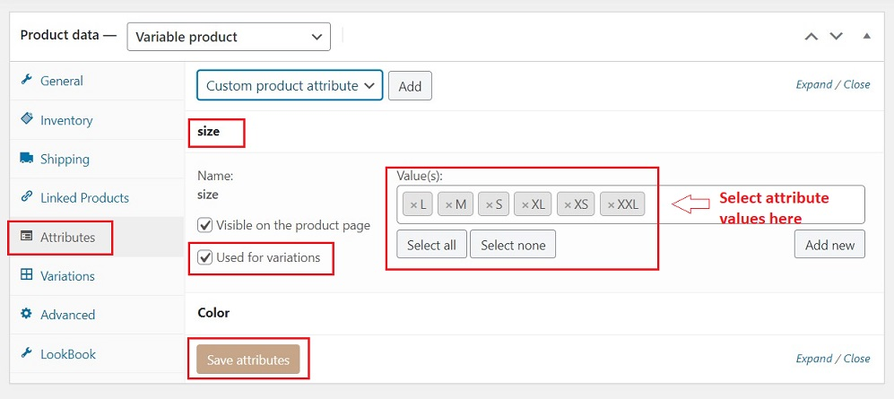
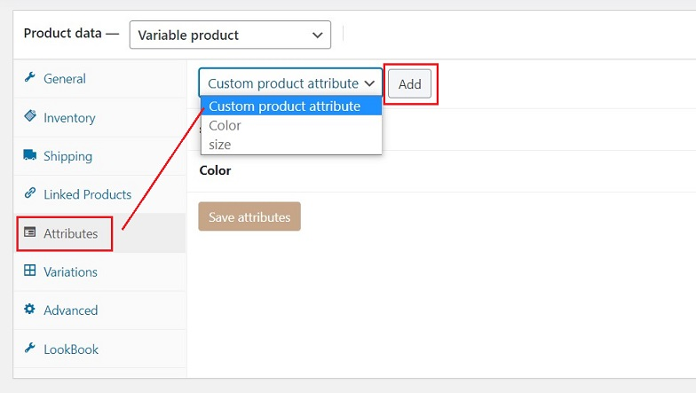
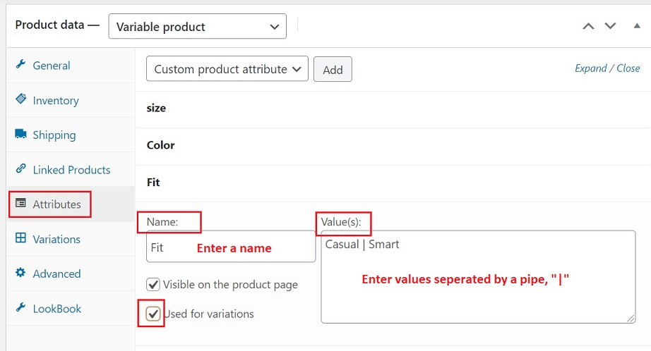
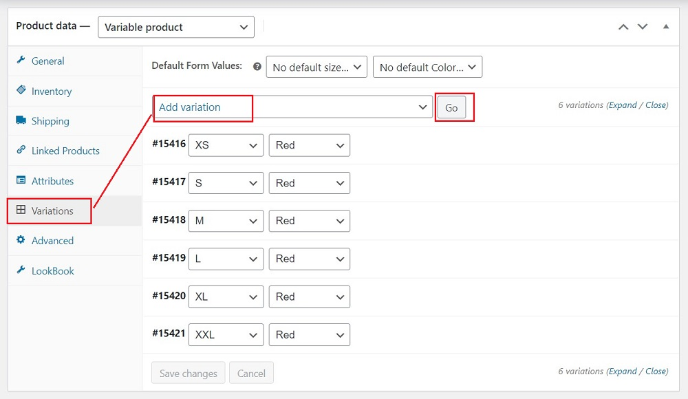
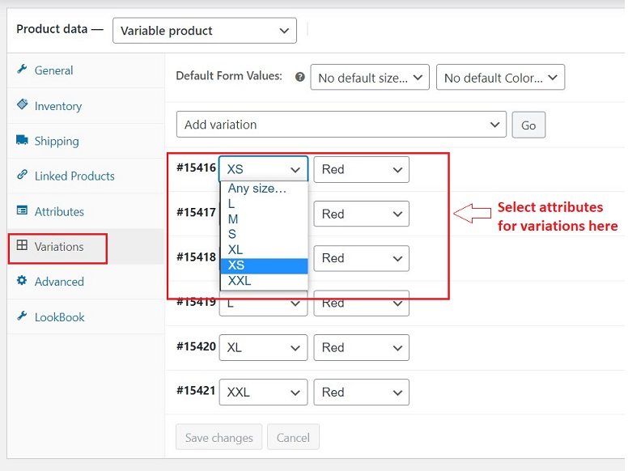
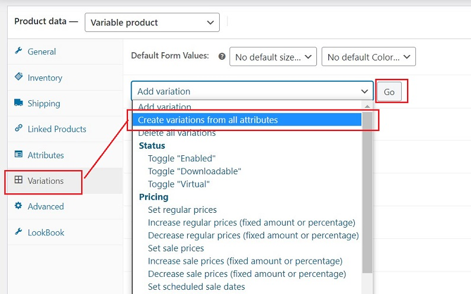
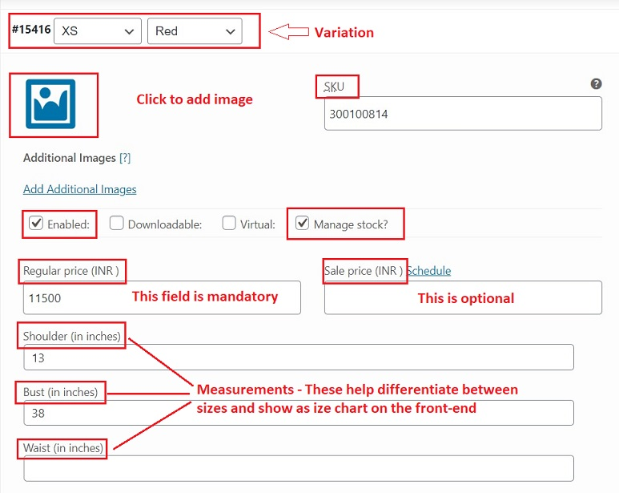
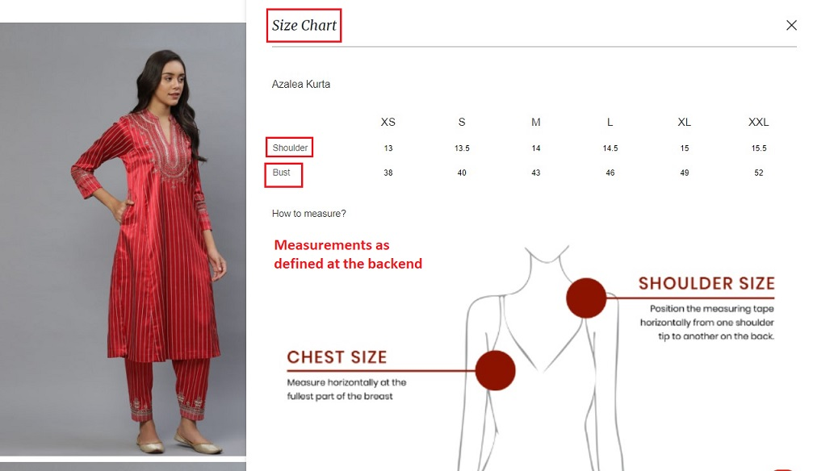
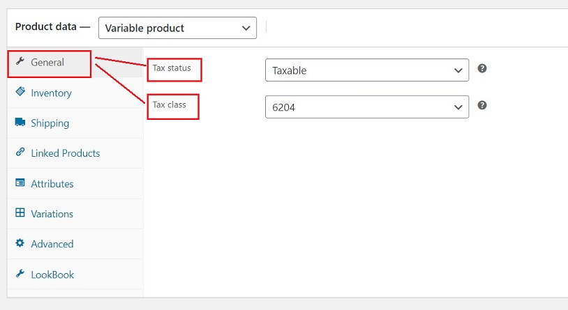
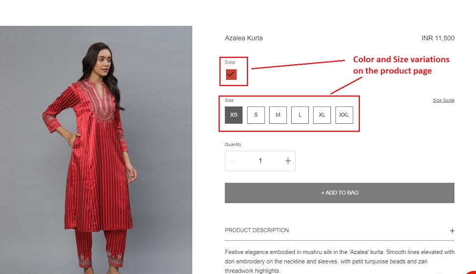

Variable Products¶
Introduction¶
Variable products are a product type that lets you offer a set of variations on a product, with control over prices, stock, image and more for each variation. They can be used for a product like a shirt, where you can offer a large, medium and small and in different colors.
In this section of the manual, we will learn how to add/ edit a variable product to the website.
Adding a Variable Product¶
Set the Product Type¶
To add a variable product, create a new product or edit an existing one.
- Go to -> Products -> Add Product
- From -> Product Data -> Select Variable Product

Add Attributes¶
In the Attributes section, add attributes — use global attributes that are site-wide or define custom ones specific to a product.
To use a Global Attribute¶
-
Select one from the dropdown and click Add

-
Choose Select All to add all attributes to the product.
- Enable -> Visible on the product page checkbox - to show all attributes on the product page.
- Enable -> Used for variations checkbox - to show it's for variations.
-
Click -> Save Attributes

To use a Custom Attribute¶
To add a new attribute specific to a product:
-
Select -> Custom product attribute and click Add

-
Name the attribute (e.g. - Size, color)
- Set values separated by a vertical pipe "|" (e.g. - Small | Medium | Large)
- Enable -> Visible on the product page checkbox - to show all attributes on the product page.
-
Enable -> Used for variations checkbox - to show it's for variations.

-
Click -> Save Attributes
Add Variations¶
To add variations:
- Go to -> Product Data -> Variations
Manually Add Variation¶
-
Select -> Add Variation from dropdown menu and click -> Go

-
Select attributes for the variation.

-
Click -> Save Changes
Creating all Possible Variations¶
To create every possible combination of variations, follow below steps:
- Select -> Create variations from all attributes
-
Click -> Go

This will create a new variation for each and every possible combination of variation attributes (max 50 per run). If you have more possible combinations you can run it again.
Example:
If you have two attributes – color (with values blue and green) and size (with values large and small) it creates the following variations:
Large Blue
Large Green
Small Blue
Small Green
Adding Variation Data¶
Once all variations are created, each variation can have the following properties:


-
Image - An image can be added for each variation. To add:
- Click -> the blue placeholder
- Select -> the image you wish to use
- Click -> Save
-
SKU - Each variation has a unique SKU which is different from the parent SKU. It is generated automatically or can be entered manually.
- Enabled - Enable or disable the variation.
- Manage Stock? - Enable to allow stock management at variation level.
- Regular Price - This is a required field. Enter the price for this variation.
- Sale Price - This is optional. Enter variation price when on sale.
-
Measurements - Different measurements can be entered. E.g. shoulder, waist, length etc. These measurements form the basis for the size chart on the product page (an example snapshot of the same is below).

General Section¶
The general section consists of :

- Tax Status - Choose whether taxable or not.
- Tax Class - Choose the relevant class from list.
What Customers See¶
On the frontend, when viewing a variable product, the user is presented with dropdown boxes to select variation options. Selecting options will reveal information about the variation, including available stock and price.
